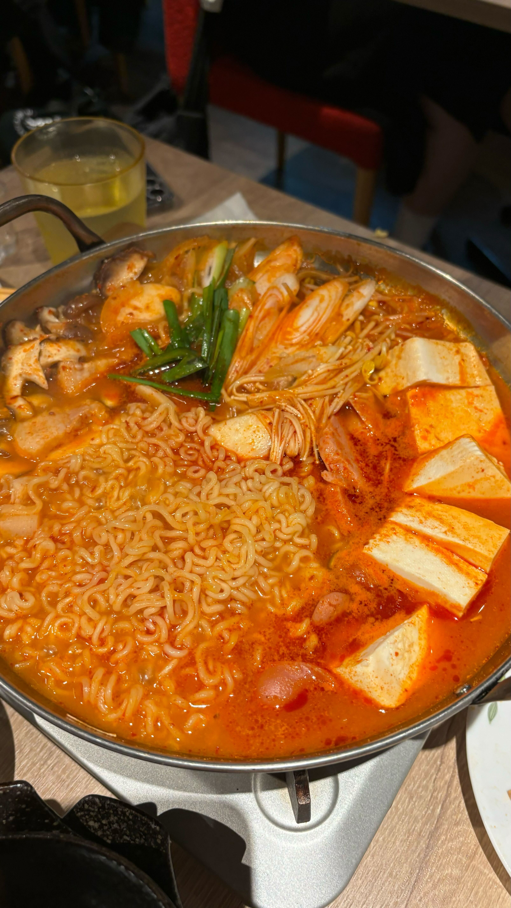
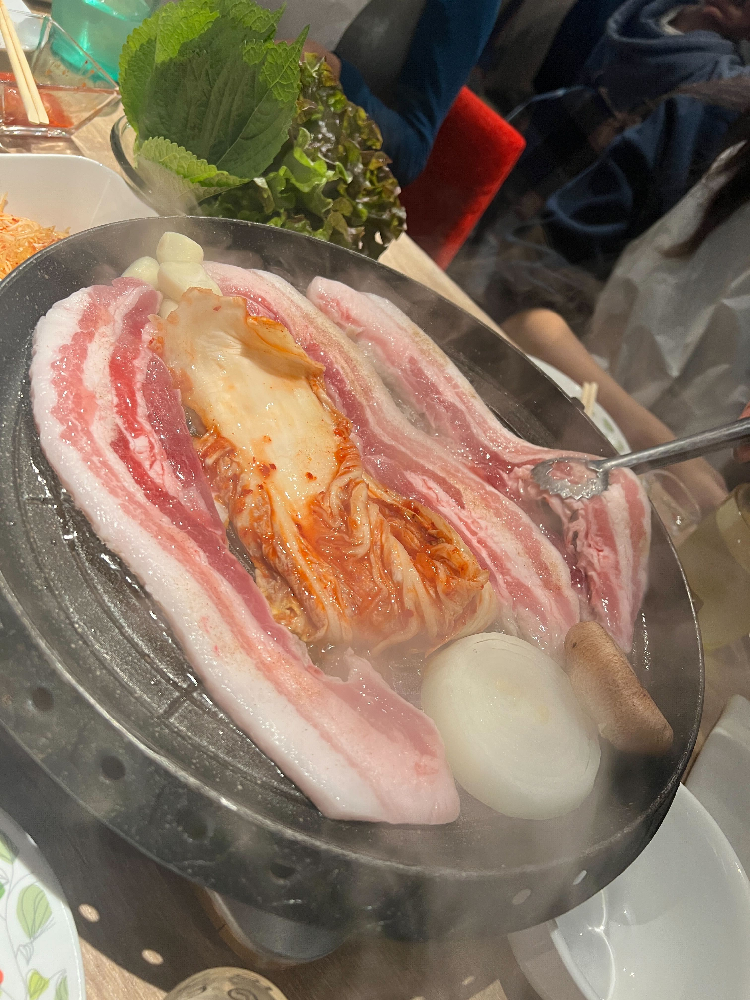

演習２
９、１０回
韓国フェスを行いました。
今回の韓国フェスではセジョンさんとへウォンさんが中心となって食事会と韓国文化やハングルについて紹介してくれました。
特に興味深かったのはキムチチゲの豆腐とスンドゥブチゲの豆腐の違いについてでした。
食べた時には違いは無いものだと思っていたのですが、スンドゥブは柔らかく、普通の豆腐は硬いようです。

今回食べたものはプデチゲといい日本語に直すと部隊鍋となりハムやスパムなどを入れているのが特徴で、米軍の物資から作られたのが起源と言われているようです。
韓国フェスではサムギョプサルを食べ、日本の焼き肉と違うのはキムチを一緒に焼いて鉄板の上で切って食べるということです。

韓国と中国のご飯を食べたりして、隣国といっても食べ物だけでなく文化が大きく異なるという事ももちろんのこと、中国に関しては同じ国でも上と下でも文化が異なり、植生なども違うことから地域によって上は辛い料理が多く、
下は甘い料理が多いというのがためになりました。